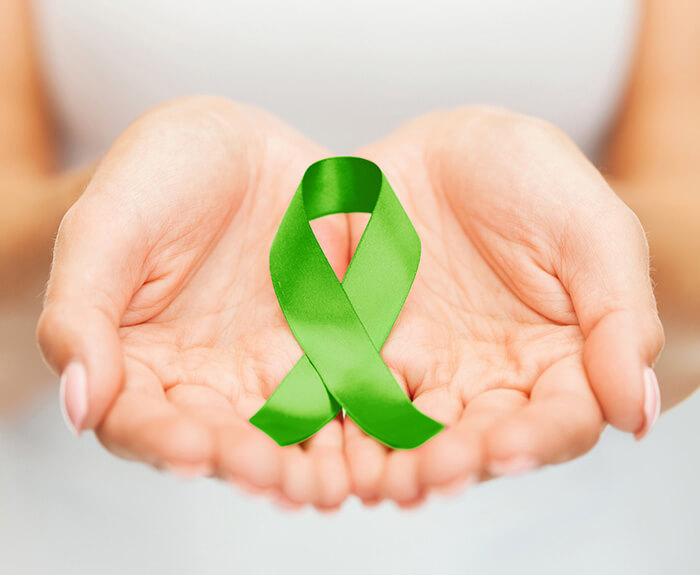

Doe vida, doe órgãos - Um gesto de amor que transforma vidas
Setembro é o mês dedicado à conscientização sobre a doação de órgãos e tecidos, marcado pela campanha Setembro Verde. A data principal é o dia 27 de setembro, Dia Nacional da Doação de Órgãos, instituído pela Lei nº 11.584/2007. O objetivo da campanha é estimular a reflexão sobre a importância desse ato solidário que pode salvar e transformar inúmeras vidas.
A doação de órgãos é um gesto de amor e generosidade que oferece esperança a milhares de pessoas que aguardam na fila de transplantes. No Brasil, o Sistema Nacional de Transplantes (SNT) coordena todo o processo, desde a captação até a distribuição dos órgãos, seguindo critérios técnicos e éticos rigorosos que garantem transparência e justiça na alocação.
Dados importantes: Segundo o Ministério da Saúde, mais de 40 mil pessoas aguardam por um transplante de órgãos no Brasil. Em 2024, o país realizou mais de 27 mil transplantes, mas a demanda ainda supera significativamente o número de doadores. Cada doador pode salvar até 8 vidas e beneficiar mais de 20 pessoas com a doação de tecidos.
A doação de órgãos pode ocorrer em duas situações distintas. A doação após morte encefálica permite a retirada de coração, pulmões, fígado, pâncreas, rins, córneas, ossos, tendões, pele e válvulas cardíacas. Já a doação em vida é possível para rim, parte do fígado, parte da medula óssea e parte do pulmão, desde que não comprometa a saúde do doador.
A morte encefálica é a parada definitiva e irreversível do cérebro, diagnosticada através de critérios médicos rigorosos estabelecidos pelo Conselho Federal de Medicina. Nessa condição, embora o coração continue batendo com ajuda de aparelhos, não há possibilidade de recuperação, e os órgãos podem ser doados para transplante.
No Brasil, a doação de órgãos depende da autorização familiar. Por isso, o passo mais importante para ser doador é informar sua família sobre o desejo de doar. Não é necessário deixar nada por escrito em documento, mas é fundamental que seus familiares conheçam sua vontade, pois serão eles que tomarão a decisão final no momento oportuno.
A manifestação de vontade na Carteira Nacional de Habilitação (CNH) ou em outros documentos não tem validade legal. O que realmente importa é o diálogo com a família. Estudos mostram que quando a família conhece o desejo do falecido de ser doador, a taxa de autorização para doação aumenta significativamente.
Existem muitos mitos que cercam a doação de órgãos. É importante esclarecer que a doação não deforma o corpo, pois a retirada dos órgãos é feita através de procedimento cirúrgico que preserva a aparência. Pessoas de todas as idades e condições de saúde podem manifestar o desejo de doar, cabendo à equipe médica avaliar a viabilidade dos órgãos no momento da doação.
Outro mito comum é que hospitais não fazem o máximo para salvar a vida de potenciais doadores. Na verdade, equipes completamente distintas cuidam do paciente e realizam o processo de captação de órgãos. O atendimento médico nunca é comprometido pela possibilidade de doação.
O transplante de órgãos no Brasil é regulamentado e totalmente gratuito, realizado exclusivamente pelo Sistema Único de Saúde (SUS) ou por ele custeado. A lista de espera é única, organizada por estado, e segue critérios técnicos como compatibilidade sanguínea, compatibilidade genética, tempo de espera e gravidade do caso.
Quando um potencial doador é identificado, a Central de Transplantes é acionada. Após a confirmação da morte encefálica e a autorização familiar, inicia-se o processo de alocação dos órgãos. A equipe médica trabalha contra o tempo, pois cada órgão tem um período específico de viabilidade fora do corpo.
Tempo de viabilidade dos órgãos: O coração pode ser preservado por até 4 horas, os pulmões por 4 a 6 horas, o fígado por até 12 horas e os rins por até 48 horas. As córneas, por outro lado, podem ser preservadas por até 14 dias. Por isso, agilidade e coordenação são fundamentais em todo o processo.
O momento da perda de um ente querido é extremamente difícil, e a decisão sobre a doação de órgãos torna-se ainda mais delicada. Por isso, ter conversado sobre o assunto previamente facilita muito esse processo. As equipes de saúde oferecem todo o apoio necessário às famílias, esclarecendo dúvidas e respeitando o tempo de cada um.
Muitas famílias relatam que autorizar a doação trouxe conforto em meio à dor, por saberem que a vida de seu ente querido continua de alguma forma, ajudando outras pessoas. O gesto de doar traz esperança e vida em um momento de despedida.
O Brasil possui um dos maiores programas públicos de transplantes do mundo. Nos últimos anos, o país tem aumentado consistentemente o número de doadores e transplantes realizados, mas ainda há muito a avançar. A taxa de recusa familiar, que gira em torno de 40%, é um dos principais desafios a serem superados.
Investimentos em campanhas de conscientização, capacitação de equipes médicas, melhoria na infraestrutura hospitalar e educação da população são fundamentais para aumentar o número de doações e reduzir as filas de espera. O Setembro Verde cumpre papel essencial nesse processo de sensibilização.
Doar órgãos é um ato de solidariedade que transcende a própria vida. É oferecer a alguém a chance de viver, de ver os filhos crescerem, de realizar sonhos e construir memórias. Converse com sua família sobre o desejo de ser doador. Essa conversa pode salvar vidas.